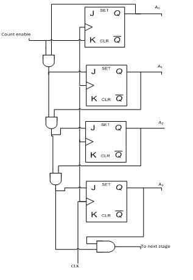
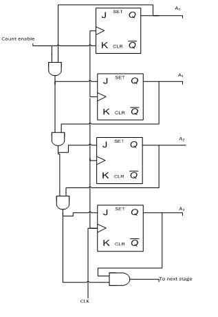
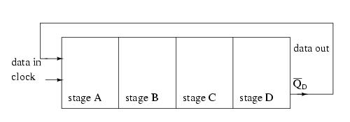
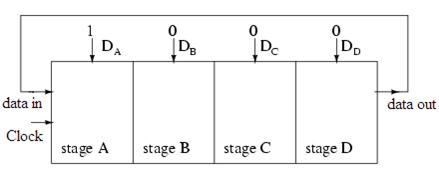
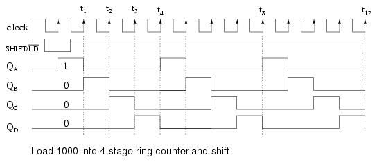
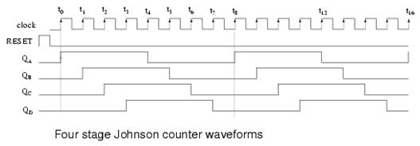
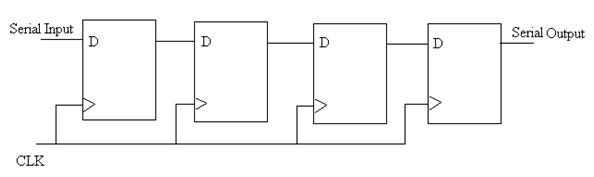
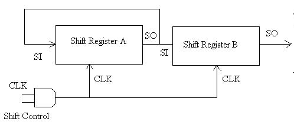
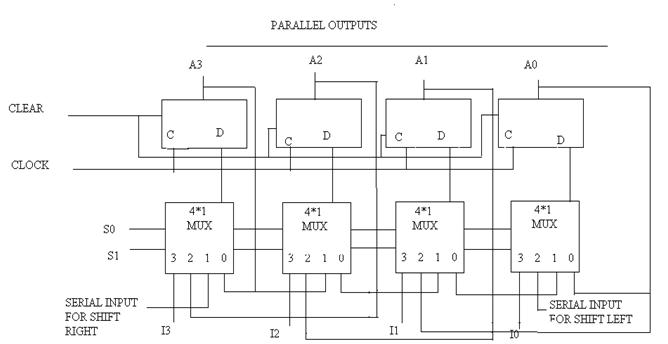

Aim
To design and simulate 4 bit binary counter, BCD counter, Johnson counter, ring counter and Universal shift register
Pre-Requisites
- Knowledge of number system
- NI LabVIEW tool
Objectives
- To study of different counters.
- To design various counters using gates and flip-f.lops
- To simulate various counters and shift registers.
- To understand various applications of counters and shift registers.


Counters
Counter is the most useful and versatile subsystem of digital branch. Counter is going to count number of clock pulses applied to it. Maximum count that binary counter can count is 2n- 1. Clock pulses occur at regular time interval, so that counter can be used to measure time or frequency. Digital counters are integrated circuits (ICs) that count events in computers and other digital systems. Because they must remember past states, digital counters include memory. Generally, digital counters consist of bistable devices or bistable multi vibrators called flip-flops. The number of flip-flops and the way in which they are connected determines the number of states and the sequence of states that digital counters complete in each full cycle.
Counters can be subdivided into 2 groups:
- Asynchronous Counters
- Synchronous Counters
The way in which devices are clocked determines whether digital counters are categorized as synchronous or asynchronous. In synchronous devices (such as synchronous BCD counters and synchronous decade counters), one clock triggers all of the flip-flops simultaneously. With asynchronous devices, often called asynchronous ripple counters an external clock pulse triggers only the first first-flop. Each successive flip-flop is then clocked by one of the outputs (Q or Q') of the previous flip-flop. Digital counters are configured as UP (counting in increasing sequence), DOWN (counting in decreasing sequence) or Bidirectional (UP / DOWN).
Synchronous / Asynchronous counter can be subdivided into following subgroups:
- Sequential Counters: States of counter are sequential.
- Non-sequential Counters: Sequence or states of counter are sequential but irregular.
- Regular Counters: In this counters, FFs are used. There is direct relation between number of states and number of FFs used i.e. N=2m.
- Decade counter – counts through ten states per stage.
- Up down counter – counts both up and down, under command of a control input.
- Ring counter – formed by a shift register with feedback connection in a ring.
- Johnson counter – a twisted ring counter.
- Cascaded counter.
Some of the commercial ICs used for design of Counters:
- IC 7490-Decade Counter
- IC 7492 Divide by 10 Counter
- IC 7493 4 - bit binary Counter
- IC 74190 Up -Down Decade Counter
- IC74191 Binary Up-down Counter
BCD Counter
BCD stands for Binary Coded Decimal. A BCD counter has four outputs usually labeled A, B, C, D. By convention A is the least significant bit, or LSB. The easiest way to understand what a BCD counter does is to follow the counting sequence in truth table form.
A BCD counter or decade counter can be constructed from a straight binary counter by terminating the "ripple-through" counting when the count reaches decimal 9 (binary 1001). Since the next toggle would set the two most significant bits, a NAND gate tied from those two outputs to the asynchronous clear line will start the count over after 9.
Asynchronous Decade Counters
A common modulus for counters with truncated sequences is ten. A counter with ten states in its sequence is called a decade counter. The circuit below is an implementation of a decade counter. Once the counter counts to ten (1010), all the flip-flops are being cleared. Notice that only Q1 and Q3 are used to decode the count of ten. This is called partial decoding, as none of the other states (zero to nine) have both Q1 and Q3 HIGH at the same time.
Synchronous Decade Counters
Similar to an asynchronous decade counter, a synchronous decade counter counts from 0 to 9 and then recycles to 0 again. This is done by forcing the 1010 state back to the 0000 state. This so called truncated sequence can be constructed by the following circuit.
|
Clock Pulse |
Q3 |
Q2 |
Q1 |
Q0 |
|
0 |
0 |
0 |
0 |
0 |
|
1 |
0 |
0 |
0 |
1 |
|
2 |
0 |
0 |
1 |
0 |
|
3 |
0 |
0 |
1 |
1 |
|
4 |
0 |
1 |
0 |
0 |
|
5 |
0 |
1 |
0 |
1 |
|
6 |
0 |
1 |
1 |
0 |
|
7 |
0 |
1 |
1 |
1 |
|
8 |
1 |
0 |
0 |
0 |
|
9 |
1 |
0 |
0 |
1 |
Table 1: Sequence for Synchronous Decade Counter
- Q0 toggles on each clock pulse.
- Q1changes on the next clock pulse each time Q0=1 and Q3=0.
- Q2 changes on the next clock pulse each time Q0= Q1=1.
- Q3 changes on the next clock pulse each time Q0=1, Q1=1 and Q3=1 (count 7), or when Q0 =1 and Q3=1 (count 9).
Asynchronous counter circuit design is based on the fact that each bit toggle happens at the same time that the preceding bit toggles from a "high" to a "low" (from 1 to 0). Since we cannot clock the toggling of a bit based on the toggling of a previous bit in a synchronous counter circuit (to do so would create a ripple effect) we must find some other pattern in the counting sequence that can be used to trigger a bit toggle.


 

Fig. 1: 4-bit Asynchronous Binary Counter
The result is a four-bit synchronous "up" counter. Each of the higher-order flip-flops are made ready to toggle (both J and K inputs "high") if the Q outputs of all previous flip-flops are "high." Otherwise, the J and K inputs for that flip-flop will both be "low," placing it into the "latch" mode where it will maintain its present output state at the next clock pulse. Since the first (LSB) flip-flop needs to toggle at every clock pulse, its J and K inputs are connected to Vcc or Vdd, where they will be "high" all the time. The next flip-flop need only "recognize" that the first flip-flop's Q output is high to be made ready to toggle, so no AND gate is needed. However, the remaining flip-flops should be made ready to toggle only when all lower-order output bits are "high," thus the need for AND gates.
To make a synchronous "down" counter, we need to build the circuit to recognize the appropriate bit patterns predicting each toggle state while counting down. Not surprisingly, when we examine the four-bit binary count sequence, we see that all preceding bits are "low" prior to a toggle (following the sequence from bottom to top).
Since each J-K flip-flop comes equipped with a Q' output as well as a Q output, we can use the Q' outputs to enable the toggle mode on each succeeding flip-flop, being that each Q' will be "high" every time that the respective Q is "low"
Taking this idea one step further, we can build a counter circuit with selectable between "up" and "down" count modes by having dual lines of AND gates detecting the appropriate bit conditions for an "up" and a "down" counting sequence, respectively, then use OR gates to combine the AND gate outputs to the J and K inputs of each succeeding flip-flop.
This circuit isn't as complex as it might first appear. The Up/Down control input line simply enables either the upper string or lower string of AND gates to pass the Q / Q' outputs to the succeeding stages of flip-flops. If the Up/Down control line is "high," the top AND gates become enabled, and the circuit functions exactly the same as the first ("up") synchronous counter circuit shown in this section. If the Up/Down control line is made "low," the bottom AND gates become enabled, and the circuit functions identically to the second ("down" counter) circuit shown in this section.
Ring counter
A ring counter is a type of counter composed of a circular shift register. If the output of a shift register is fed back to the input a ring counter results. There are two types of ring counters:
- A straight ring counter or Over beck counter connects the output of the last shift register to the first shift register input and circulates a single one (or zero) bit around the ring. For example, in a 4-register one-hot counter, with initial register values of 1000, the repeating pattern is: 1000, 0100, 0010, 0001, 1000... . Note that one of the registers must be pre-loaded with a 1 (or 0) in order to operate properly.
- A twisted ring counter (also called Johnson counter or Moebius counter) connects the complement of the output of the last shift register to its input and circulates a stream of ones followed by zeros around the ring. For example, in a 4-register counter, with initial register values of 0000, the repeating pattern is: 0000, 1000, 1100, 1110, 1111, 0111, 0011, 0001, 0000..

Fig. 2: Ring counter shift register, output fed back to input
The data pattern contained within the shift register will re-circulate as long as clock pulses are applied. For example, the data pattern will repeat every four clock pulses in the figure below. However, we must load a data pattern. All 0's or all 1's doesn't count. Is a continuous logic level from such a condition useful? We make provisions for loading data into the parallel-in/ serial-out shift register configured as a ring counter below. Any random pattern may be loaded. The most generally useful pattern is a single 1.

Fig. 3: Parallel In Serial Out Shift Register using Ring Counter
Loading binary 1000 into the ring counter, above, prior to shifting yields a viewable pattern. The data pattern for a single stage repeats every four clock pulses in our 4-stage example. The waveforms for all four stages look the same, except for the one clock time delay from one stage to the next. See figure below.

Fig. 4: Timing Diagram For Ring Counter
The circuit above is a divide by 4 counter. Comparing the clock input to any one of the outputs, shows a frequency ratio of 4:1. How may stages would we need for a divide by 10 ring counter? Ten stages would recirculate the 1 every 10 clock pulses.
An alternate method of initializing the ring counter to 1000 is shown above. The shift waveforms are identical to those above, repeating every fourth clock pulse. The requirement for initialization is a disadvantage of the ring counter over a conventional counter. At a minimum, it must be initialized at power-up since there is no way to predict what state flip-flops will power up in. In theory, initialization should never be required again. In actual practice, the flip-flops could eventually be corrupted by noise, destroying the data pattern. A "self correcting" counters, like a conventional synchronous binary counter would be more reliable.
The above binary synchronous counter needs only two stages, but requires decoder gates. The ring counter had more stages, but was self decoding, saving the decode gates above. Another disadvantage of the ring counter is that it is not "self starting". If we need the decoded outputs, the ring counter looks attractive, in particular, if most of the logic is in a single shift register package. If not, the conventional binary counter is less complex without the decoder.
The waveforms decoded from the synchronous binary counter are identical to the previous ring counter waveforms. The counter sequence is (QA QB) = (00 01 10 11).
Johnson counters
The switch-tail ring counter, also know as the Johnson counter, overcomes some of the limitations of the ring counter. Like a ring counter a Johnson counter is a shift register fed back on its' self. It requires half the stages of a comparable ring counter for a given division ratio. If the complement output of a ring counter is fed back to the input instead of the true output, a Johnson counter results. The difference between a ring counter and a Johnson counter is which output of the last stage is fed back (Q or Q'). Carefully compare the feedback connection below to the previous ring counter.
This "reversed" feedback connection has a profound effect upon the behavior of the otherwise similar circuits. Recirculating a single 1 around a ring counter divides the input clock by a factor equal to the number of stages. Whereas, a Johnson counter divides by a factor equal to twice the number of stages. For example, a 4-stage ring counter divides by 4. A 4-stage Johnson counter divides by 8.
Start a Johnson counter by clearing all stages to 0s before the first clock. This is often done at power-up time. Referring to the figure below, the first clock shifts three 0s from ( QA QB QC) to the right into ( QB QC QD). The 1 at QD' (the complement of Q) is shifted back into QA. Thus, we start shifting 1s to the right, replacing the 0s. Where a ring counter recirculated a single 1, the 4-stage Johnson counter recirculates four 0s then four 1s for an 8-bit pattern, then repeats.

Fig. 5: Timing Diagram for Johnson Counter
The above waveforms illustrates that multi-phase square waves are generated by a Johnson counter. The 4-stage unit above generates four overlapping phases of 50% duty cycle. How many stages would be required to generate a set of three phase waveforms? For example, a three stage Johnson counter, driven by a 360 Hertz clock would generate three 120o phased square waves at 60 Hertz. The outputs of the flop-flops in a Johnson counter are easy to decode to a single state.
Shift Registers
In digital circuits, a shift register is a cascade of flip flops, sharing the same clock, which has the output of any one but the last flip-flop connected to the "data" input of the next one in the chain, resulting in a circuit that shifts by one position the one-dimensional "bit array" stored in it, shifting in the data present at its input and shifting out the last bit in the array, when enabled to do so by a transition of the clock input. More generally, a shift register may be multidimensional, such that its "data in" input and stage outputs are themselves bit arrays: this is implemented simply by running several shift registers of the same bit-length in parallel.
Shift registers can have both parallel and serial inputs and outputs. These are often configured as serial-in, parallel-out (SIPO) or as parallel-in, serial-out (PISO). There are also types that have both serial and parallel input and types with serial and parallel output. There are also bi-directional shift registers which allow shifting in both directions: L → R or R → L. The serial input and last output of a shift register can also be connected together to create a circular shift register.
Shift registers are a type of sequential logic circuit, mainly for storage of digital data. They are a group of flip-flops connected in a chain so that the output from one flip-flop becomes the input of the next flip-flop. Most of the registers possess no characteristic internal sequence of states. All the flip-flops are driven by a common clock, and all are set or reset simultaneously. Contain several flip-flops in a row. One bit is input at one end on each clock pulse. Each other bit moves one place to the right (or left). The outputs of each flip-flop are available simultaneously.
We can use shift registers for serial to parallel conversion. Input 8 bits on 8 pulses, then read data simultaneously.
A basic four-bit shift register can be constructed using four D flip-flops, as shown below. The operation of the circuit is as follows. The register is first cleared, forcing all four outputs to zero. The input data is then applied sequentially to the D input of the first flip-flop on the left (FF0). During each clock pulse, one bit is transmitted from left to right. Assume a data word to be 1001. The least significant bit of the data has to be shifted through the register from FF0 to FF3.
In order to get the data out of the register, they must be shifted out serially. This can be done destructively or non-destructively. For destructive readout, the original data is lost and at the end of the read cycle, all flip-flops are reset to zero.
To avoid the loss of data, an arrangement for a non-destructive reading can be done by adding two AND gates, an OR gate and an inverter to the system. The construction of this circuit is shown below.
The data is loaded to the register when the control line is HIGH (ie WRITE). The data can be shifted out of the register when the control line is LOW (ie READ).
For this kind of register, data bits are entered serially in the same manner as discussed in the last section. The difference is the way in which the data bits are taken out of the register. Once the data are stored, each bit appears on its respective output line, and all bits are available simultaneously. A construction of a four-bit serial in - parallel out register is shown below.
D0, D1, D2 and D3 are the parallel inputs, where D0 is the most significant bit and D3 is the least significant bit. To write data in, the mode control line is taken to LOW and the data is clocked in. The data can be shifted when the mode control line is HIGH as SHIFT is active high. The register performs right shift operation on the application of a clock pulse, as shown in the animation below.
For parallel in - parallel out shift registers, all data bits appear on the parallel outputs immediately following the simultaneous entry of the data bits. The following circuit is a four-bit parallel in - parallel out shift register constructed by D flip-flops.
The D's are the parallel inputs and the Q's are the parallel outputs. Once the register is clocked, all the data at the D inputs appear at the corresponding Q outputs simultaneously.
The registers discussed so far involved only right shift operations. Each right shift operation has the effect of successively dividing the binary number by two. If the operation is reversed (left shift), this has the effect of multiplying the number by two. With suitable gating arrangement a serial shift register can perform both operations.
A bidirectional, or reversible, shift register is one in which the data can be shift either left or right. A four-bit bidirectional shift register using D flip-flops is shown below.
Registers
The register is a group of flip-flop. An n bit register consists of group of n flip-flops capable of storing n bits of binary information. Register may have the combinational gates that perform certain data processing tasks.
Register consists of group of flip-flops and gates that affect their transition.
Counter is a register that goes through the predetermined sequence of steps. The gates in the counter are connected in such a way as to produce the prescribed the sequence of binary steps. Counters are special type of registers.
Shift registers
Register capable of shifting its binary information in one or both directions is called shift registers. The logical configuration of the shift registers consists of the chain of flip-flops in cascade, with the o/p of one flip-flop connected to input of next flip-flop. All flip-flops receive common clock pulses which activate the shift from one stage to the next.
4 bit shift register
The output of the flip-flop is connected to the D input of the next flip-flop. Each clock pulse shifts the contents of the register one bit position to the right. The serial input data lines what goes into the leftmost flip-flop during the shift. The serial output is taken from the output of the right most flip-flops. Sometimes it is necessary to control the shift so that it occurs only with certain pulses but not with the others. This can be done by inhibiting the clock from the input of register to prevent it from shifting.

Fig. 6: 4-bit Shift Register

Fig. 7: Serial Transfer
4 Bit universal shift register
A register capable of shifting in one direction only is a unidirectional shift register & register that can shift in both directions is bi-directional shift registers. If the register has both the shifts & parallel load capabilities, it is referred to as universal shift register.
|
S1 |
S0 |
Register operation |
|
0 |
0 |
No change |
|
0 |
1 |
Shift right |
|
1 |
0 |
Shift left |
|
1 |
1 |
Parallel load |
Table 2: Function table for the register

Fig. 8: 4- bit Universal Shift Register

- Select appropriate counter and shift register from the tab menu.
- Select and set appropriate clock period and understand its significance.
- Execute the simulation by pressing the run button.
- Repeat the procedure and observe the counter outputs.
- Repeat the procedure for universal register.

Hybrid Electronics Laboratory
Experiment No. 3
Design and Simulation of Various Counters and Registers
Aim: To design and simulate 4-bit Binary Counter, BCD Counter, Johnson Counter, Ring Counter
and Universal Shift Register
Objectives:
1. To study different counters.
2. To design various counters using gates and flip-flops
3. To simulate various counters and shift registers.
4. To understand various applications of counters and shift registers.
Theory
Counters
Counter is the most useful and versatile subsystem of digital branch. Counter is going to count number of clock pulses applied to it. Maximum count that binary counter can count is 2n- 1. Clock pulses occur at regular time interval, so that counter can be used to measure time or frequency. Digital counters are integrated circuits (ICs) that count events in computers and other digital systems. Because they must remember past states, digital counters include memory. Generally, digital counters consist of bistable devices or bistable multi vibrators called flip-flops. The number of flip-flops and the way in which they are connected determines the number of states and the sequence of states that digital counters complete in each full cycle.
Counters can be subdivided into 2 groups:
1. Asynchronous Counters
2. Synchronous Counters
The way in which devices are clocked determines whether digital counters are categorized as synchronous or asynchronous. In synchronous devices (such as synchronous BCD counters and synchronous decade counters), one clock triggers all of the flip-flops simultaneously. With asynchronous devices, often called asynchronous ripple counters an external clock pulse triggers only the first first-flop. Each successive flip-flop is then clocked by one of the outputs (Q or Q') of the previous flip-flop. Digital counters are configured as UP (counting in increasing sequence), DOWN (counting in decreasing sequence) or Bidirectional (UP / DOWN).
Synchronous / Asynchronous counter can be subdivided into following subgroups:
· Sequential Counters: States of counter are sequential.
· Non-sequential Counters: Sequence or states of counter are sequential but irregular.
· Regular Counters: In this counters, FFs are used. There is direct relation between number of states and number of FFs used i.e. N=2m.
· Decade counter – counts through ten states per stage.
· Up down counter – counts both up and down, under command of a control input.
· Ring counter – formed by a shift register with feedback connection in a ring.
· Johnson counter – a twisted ring counter.
· Cascaded counter.
Some of the commercial ICs used for design of Counters:
· IC 7490-Decade Counter
· IC 7492 Divide by 10 Counter
· IC 7493 4 - bit binary Counter
· IC 74190 Up -Down Decade Counter
IC74191 Binary Up-down Counter
BCD Counter:
BCD stands for Binary Coded Decimal. A BCD counter has four outputs usually labelled A, B, C, D. By convention A is the least significant bit, or LSB. The easiest way to understand what a BCD counter does is to follow the counting sequence in truth table form
A BCD counter or decade counter can be constructed from a straight binary counter by terminating the "ripple-through" counting when the count reaches decimal 9 (binary 1001). Since the next toggle would set the two most significant bits, a NAND gate tied from those two outputs to the asynchronous clear line will start the count over after 9.
Asynchronous decade counter:
A common modulus for counters with truncated sequences is ten. A counter with ten states in its sequence is called a decade counter. The circuit below is an implementation of a decade counter. Once the counter counts to ten (1010), all the flip-flops are being cleared. Notice that only Q1 and Q3 are used to decode the count of ten. This is called partial decoding, as none of the other states (zero to nine) have both Q1 and Q3 HIGH at the same time.
Synchronous Decade Counters:
Similar to an asynchronous decade counter, a synchronous decade counter counts from 0 to 9 and then recycles to 0 again. This is done by forcing the 1010 state back to the 0000 state. This so called truncated sequence can be constructed by the following circuit.
T
able 1: Sequence for Synchronous Decade Counter |
· Q0 toggles on each clock pulse.
· Q1changes on the next clock pulse each time Q0=1 and Q3=0.
· Q2 changes on the next clock pulse each time Q0= Q1=1.
· Q3 changes on the next clock pulse each time Q0=1, Q1=1 and Q3=1 (count 7), or when Q0 =1 and Q3=1 (count 9).
Asynchronous counter circuit design is based on the fact that each bit toggle happens at the same time that the preceding bit toggles from a "high" to a "low" (from 1 to 0). Since we cannot clock the toggling of a bit based on the toggling of a previous bit in a synchronous counter circuit (to do so would create a ripple effect) we must find some other pattern in the counting sequence that can be used to trigger a bit toggle.

Fig. 1: 4-bit Synchronous Binary Counter
The result is a four-bit synchronous "up" counter. Each of the higher-order flip-flops are made ready to toggle (both J and K inputs "high") if the Q outputs of all previous flip-flops are "high." Otherwise, the J and K inputs for that flip-flop will both be "low," placing it into the "latch" mode where it will maintain its present output state at the next clock pulse. Since the first (LSB) flip-flop needs to toggle at every clock pulse, its J and K inputs are connected to Vcc or Vdd, where they will be "high" all the time. The next flip-flop need only "recognize" that the first flip-flop's Q output is high to be made ready to toggle, so no AND gate is needed. However, the remaining flip-flops should be made ready to toggle only when all lower-order output bits are "high," thus the need for AND gates.
To make a synchronous "down" counter, we need to build the circuit to recognize the appropriate bit patterns predicting each toggle state while counting down. Not surprisingly, when we examine the four-bit binary count sequence, we see that all preceding bits are "low" prior to a toggle (following the sequence from bottom to top).
Since each J-K flip-flop comes equipped with a Q' output as well as a Q output, we can use the Q' outputs to enable the toggle mode on each succeeding flip-flop, being that each Q' will be "high" every time that the respective Q is "low".
Taking this idea one step further, we can build a counter circuit with selectable between "up" and "down" count modes by having dual lines of AND gates detecting the appropriate bit conditions for an "up" and a "down" counting sequence, respectively, then use OR gates to combine the AND gate outputs to the J and K inputs of each succeeding flip-flop.
This circuit isn't as complex as it might first appear. The Up/Down control input line simply enables either the upper string or lower string of AND gates to pass the Q / Q' outputs to the succeeding stages of flip-flops. If the Up/Down control line is "high," the top AND gates become enabled, and the circuit functions exactly the same as the first ("up") synchronous counter circuit shown in this section. If the Up/Down control line is made "low," the bottom AND gates become enabled, and the circuit functions identically to the second ("down" counter) circuit shown in this section.
A ring counter is a type of counter composed of a circular shift register. If the output of a shift register is fed back to the input a ring counter results. There are two types of ring counters:
· A straight ring counter or Over beck counter connects the output of the last shift register to the first shift register input and circulates a single one (or zero) bit around the ring. For example, in a 4-register one-hot counter, with initial register values of 1000, the repeating pattern is: 1000, 0100, 0010, 0001, 1000... . Note that one of the registers must be pre-loaded with a 1 (or 0) in order to operate properly.
· A twisted ring counter (also called Johnson counter or Moebius counter) connects the complement of the output of the last shift register to its input and circulates a stream of one’s followed by zeros around the ring. For example, in a 4-register counter, with initial register values of 0000, the repeating pattern is: 0000, 1000, 1100, 1110, 1111, 0111, 0011, 0001, 0000... .

Fig. 2: Ring counter shift register, output fed back to input
The data pattern contained within the shift register will re-circulate as long as clock pulses are applied. For example, the data pattern will repeat every four clock pulses in the figure below. However, we must load a data pattern. All 0's or all 1's doesn't count. Is a continuous logic level from such a condition useful? We make provisions for loading data into the parallel-in/ serial-out shift register configured as a ring counter below. Any random pattern may be loaded. The most generally useful pattern is a single 1.

Fig. 3: Parallel in serial out shift register using ring counter
Loading binary 1000 into the ring counter, above, prior to shifting yields a viewable pattern. The data pattern for a single stage repeats every four clock pulses in our 4-stage example. The waveforms for all four stages look the same, except for the one clock time delay from one stage to the next. See figure below.

Fig. 4: Timing Diagram For Ring Counter
The circuit above is a divide by 4 counter. Comparing the clock input to any one of the outputs, shows a frequency ratio of 4:1. How may stages would we need for a divide by 10 ring counter? Ten stages would recirculate the 1 every 10 clock pulses.
An alternate method of initializing the ring counter to 1000 is shown above. The shift waveforms are identical to those above, repeating every fourth clock pulse. The requirement for initialization is a disadvantage of the ring counter over a conventional counter. At a minimum, it must be initialized at power-up since there is no way to predict what state flip-flops will power up in. In theory, initialization should never be required again. In actual practice, the flip-flops could eventually be corrupted by noise, destroying the data pattern. A "self correcting" counters, like a conventional synchronous binary counter would be more reliable.
The above binary synchronous counter needs only two stages, but requires decoder gates. The ring counter had more stages, but was self decoding, saving the decode gates above. Another disadvantage of the ring counter is that it is not "self starting". If we need the decoded outputs, the ring counter looks attractive, in particular, if most of the logic is in a single shift register package. If not, the conventional binary counter is less complex without the decoder.
The waveforms decoded from the synchronous binary counter are identical to the previous ring counter waveforms. The counter sequence is (QA QB) = (00 01 10 11).
Johnson counters:
The switch-tail ring counter, also know as the Johnson counter, overcomes some of the limitations of the ring counter. Like a ring counter a Johnson counter is a shift register fed back on its' self. It requires half the stages of a comparable ring counter for a given division ratio. If the complement output of a ring counter is fed back to the input instead of the true output, a Johnson counter results. The difference between a ring counter and a Johnson counter is which output of the last stage is fed back (Q or Q'). Carefully compare the feedback connection below to the previous ring counter.
This "reversed" feedback connection has a profound effect upon the behaviour of the otherwise similar circuits. Recirculating a single 1 around a ring counter divides the input clock by a factor equal to the number of stages. Whereas, a Johnson counter divides by a factor equal to twice the number of stages. For example, a 4-stage ring counter divides by 4. A 4-stage Johnson counter divides by 8.
Start a Johnson counter by clearing all stages to 0s before the first clock. This is often done at power-up time. Referring to the figure below, the first clock shifts three 0s from (QA QB QC) to the right into ( QB QC QD). The 1 at QD' (the complement of Q) is shifted back into QA. Thus, we start shifting 1s to the right, replacing the 0s. Where a ring counter recirculated a single 1, the 4-stage Johnson counter recirculates four 0s then four 1s for an 8-bit pattern, then repeats.

Fig . 5: Timing Diagram For Johnson Counter
The above waveforms illustrates that multi-phase square waves are generated by a Johnson counter. The 4-stage unit above generates four overlapping phases of 50% duty cycle. How many stages would be required to generate a set of three phase waveforms? For example, a three stage Johnson counter, driven by a 360 Hertz clock would generate three 120o phased square waves at 60 Hertz. The outputs of the flop-flops in a Johnson counter are easy to decode to a single state.
Shift Registers
In digital circuits, a shift register is a cascade of flip flops, sharing the same clock, which has the output of anyone but the last flip-flop connected to the "data" input of the next one in the chain, resulting in a circuit that shifts by one position the one-dimensional "bit array" stored in it, shifting in the data present at its input and shifting out the last bit in the array, when enabled to do so by a transition of the clock input. More generally, a shift register may be multidimensional; such that its "data in" input and stage outputs are themselves bit arrays: this is implemented simply by running several shift registers of the same bit-length in parallel.
Shift registers can have both parallel and serial inputs and outputs. These are often configured as serial-in, parallel-out (SIPO) or as parallel-in, serial-out (PISO). There are also types that have both serial and parallel input and types with serial and parallel output. There are also bi-directional shift registers which allow shifting in both directions: L → R or R → L. The serial input and last output of a shift register can also be connected together to create a circular shift register.
Shift registers are a type of sequential logic circuit, mainly for storage of digital data. They are a group of flip-flops connected in a chain so that the output from one flip-flop becomes the input of the next flip-flop. Most of the registers possess no characteristic internal sequence of states. All the flip-flops are driven by a common clock, and all are set or reset simultaneously. Contain several flip-flops in a row. One bit is input at one end on each clock pulse. Each other bit moves one place to the right (or left). The outputs of each flip-flop are available simultaneously.
We can use shift registers for serial to parallel conversion. Input 8 bits on 8 pulses, then read data simultaneously.
A basic four-bit shift register can be constructed using four D flip-flops, as shown below. The operation of the circuit is as follows. The register is first cleared, forcing all four outputs to zero. The input data is then applied sequentially to the D input of the first flip-flop on the left (FF0). During each clock pulse, one bit is transmitted from left to right. Assume a data word to be 1001. The least significant bit of the data has to be shifted through the register from FF0 to FF3.
In order to get the data out of the register, they must be shifted out serially. This can be done destructively or non-destructively. For destructive readout, the original data is lost and at the end of the read cycle, all flip-flops are reset to zero.
To avoid the loss of data, an arrangement for a non-destructive reading can be done by adding two AND gates, an OR gate and an inverter to the system. The construction of this circuit is shown below.
The data is loaded to the register when the control line is HIGH (ie WRITE). The data can be shifted out of the register when the control line is LOW (ie READ).
For this kind of register, data bits are entered serially in the same manner as discussed in the last section. The difference is the way in which the data bits are taken out of the register. Once the data are stored, each bit appears on its respective output line, and all bits are available simultaneously. A construction of a four-bit serial in - parallel out register is shown below.
D0, D1, D2 and D3 are the parallel inputs, where D0 is the most significant bit and D3 is the least significant bit. To write data in, the mode control line is taken to LOW and the data is clocked in. The data can be shifted when the mode control line is HIGH as SHIFT is active high. The register performs right shift operation on the application of a clock pulse, as shown in the animation below.
For parallel in - parallel out shift registers, all data bits appear on the parallel outputs immediately following the simultaneous entry of the data bits. The following circuit is a four-bit parallel in - parallel out shift register constructed by D flip-flops.
The D's are the parallel inputs and the Q's are the parallel outputs. Once the register is clocked, all the data at the D inputs appear at the corresponding Q outputs simultaneously.
The registers discussed so far involved only right shift operations. Each right shift operation has the effect of successively dividing the binary number by two. If the operation is reversed (left shift), this has the effect of multiplying the number by two. With suitable gating arrangement a serial shift register can perform both operations.
A bidirectional, or reversible, shift register is one in which the data can be shift either left or right. A four-bit bidirectional shift register using D flip-flops is shown below.
Registers:
The register is a group of flip-flop. An n bit register consists of group of n flip-flops capable of storing n bits of binary information. Register may have the combinational gates that perform certain data processing tasks. Register consists of group of flip-flops and gates that affect their transition.
Counter is a register that goes through the predetermined sequence of steps. The gates in the counter are connected in such a way as to produce the prescribed the sequence of binary steps. Counters are special type of registers.
Shift registers:
Register capable of shifting its binary information in one or both directions is called shift registers. The logical configuration of the shift registers consists of the chain of flip-flops in cascade, with the o/p of one flip-flop connected to input of next flip-flop. All flip-flops receive common clock pulses which activate the shift from one stage to the next.
4 bit shift register:
The output of the flip-flop is connected to the D input of the next flip-flop. Each clock pulse shifts the contents of the register one bit position to the right. The serial input data lines what goes into the leftmost flip-flop during the shift. The serial output is taken from the output of the right most flip-flops. Sometimes it is necessary to control the shift so that it occurs only with certain pulses but not with the others. This can be done by inhibiting the clock from the input of register to prevent it from shifting.

Fig. 6: 4- bit Shift Register

Fig. 7: Serial Transfer
4 Bit universal shift register:
A register capable of shifting in one direction only is a unidirectional shift register & register that can shift in both directions is bi-directional shift registers. If the register has both the shifts & parallel load capabilities, it is referred to as universal shift register.
|
S1 |
S0 |
Register operation |
|
0 |
0 |
No change |
|
0 |
1 |
Shift right |
|
1 |
0 |
Shift left |
|
1 |
1 |
Parallel load |
Table 2: Function table for the register

Fig. 8: 4- bit Universal Shift Register
Procedure:
Select appropriate counter and shift register from the tab menu.
2. Select and set appropriate clock period and understand its significance.
3. Execute the simulation by pressing the run button.
4. Repeat the procedure and observe the counter outputs.
5. Repeat the procedure for universal register.
Simulation Screenshots:


Results
Four bit binary, BCD, ring, Johnson counters and universal shift register are designed and simulated using the flip-flops and Gates.
Conclusion
Counters and shift registers are designed for various applications.
Assignment
Design a counter with following repeated binary sequence: 0, 1, 2, 4, 6. Use D flip flops.
2. Design a decade counter to count in ex-3 code sequence. Use JK flip-flops.

Click Here for Simulator
Click on the link to start simulation.
Click here to download simulation
*Please download supported plug in to run this simulation from download tab

Result
Assignment
- Design a counter with following repeated binary sequence: 0, 1, 2, 4, 6. Use D flip flops.
- Design a decade counter to count in ex-3 code sequence. Use JK flip-flops.
Further Reading
- Digital Electronics, Tokheim, Tata-McGraw Hill, 4th Edition
- Digital Design, M. Morris Mano, Pearson Education, 3rd Edition
Here are the files which are required for proper viewing of the Simulation.
Install as per operating system. Installation instructions are given below along with the link to download files.
LabVIEW 8.6 Run-Time Engine Patch for Windows:
LabVIEW Run-Time Engine 8.6 - Windows/2000/XP/Vista/Vista x64 - 8.6f1 Patch
To download, click here.
LabVIEW Vision Run-Time Engine 8.6 - Windows/2000/XP/Vista/Vista x64
To download, click here.
Installation Instructions:
Double-click the executable to start installation.
LabVIEW Run-Time Engine 8.6 for Linux:
Download the labview-rte-aal-1.1-1.i386.rpm to your computer.
To download, click here.
Download the labview86-rte-8.6.0-1.i386.rpm files to your computer.
To download, click here.
Installation Instructions:
Run (must be logged in with root access for the machine)
Run (must be logged in with root access for the machine)
rpm -Uvh labview86-rte-8.6.0-1.i386.rpm